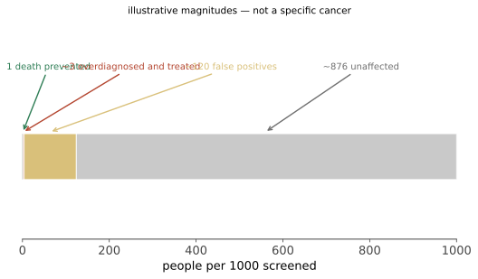

本页目录
预防 III · 癌症筛查逐癌种证据对照
第 03 页给了工具，这一页给账本。每一项筛查都同时列出收益（NNS）与危害（假阳性、过度诊断）——这是本站唯一一页把所有数字放在一张表里的地方。所有数值为典型量级示意，随人群、年龄段、筛查间隔与地区差异很大，不可直接套用。
地区与年份边界：癌种例子主要参照美国 USPSTF 乳腺癌（2024）、结直肠癌/肺癌（2021）与 WHO 宫颈筛查建议（2021）；平均风险筛查的年龄、频率和高风险路径因国家、人群风险与资源而异，不能把单一指南写成全球规则。
1. 总览表
| 筛查 | 死亡率 RCT 证据 | 相对死亡率下降 | NNS（量级） | 主要危害 |
|---|---|---|---|---|
| 结直肠癌（便隐血/FIT、结肠镜） | 强 | 该病死亡率下降明确 | 数百人 | 结肠镜穿孔（罕见）、假阳性 |
| 乳腺癌（钼靶） | 有，但幅度有争议 | 约 20% 量级 | 数百至千余人 | 过度诊断（估计范围很宽）、假阳性召回、活检 |
| 宫颈癌（细胞学/HPV） | 强（观察性 + 机制 + HPV RCT） | 大幅下降 | 数百人 | 过度治疗致早产风险（锥切） |
| 肺癌（低剂量 CT，重度吸烟者） | 强（NLST、NELSON） | 约 20–25% | 约 300 人量级 | 假阳性率高、偶发瘤、辐射、有创检查并发症 |
| 前列腺癌（PSA） | 不一致（ERSPC 阳性、PLCO 阴性/污染严重） | 小 | 大 | 过度诊断严重、活检并发症、治疗致失禁与性功能障碍 |
| 甲状腺癌（超声） | 无 | 无 | — | 过度诊断的典型案例（第 03 页）——不推荐 |
| 卵巢癌（CA-125 + 超声） | 有 RCT，未显示死亡率获益 | — | — | 手术并发症——不推荐用于一般人群 |
| 全身 CT/MRI"体检套餐" | 无 RCT 支持 | — | — | 偶发瘤瀑布、辐射、成本——不推荐 |
读这张表的正确方式：上面几行是"证据支持、收益大于危害"，下面几行是"证据不支持或危害占优"。它们都被商业机构以同样的语言推销——"早发现"这句话不区分它们。
2. 三个值得深入的案例
乳腺癌钼靶：一场持续三十年的争论
争论的实质不是"有没有效"，而是"收益与危害的比例是多少"。不同权威机构对同一批 RCT 数据给出了不同的过度诊断估计（从很低到相当高），主要分歧在于统计方法与随访长度。
得到共识的部分：效应随年龄增长（50 岁以上收益更明确）；40–49 岁的绝对收益较小而假阳性率较高；长期累积假阳性率相当高（多轮筛查后，相当比例的女性会经历至少一次召回）。
这解释了为什么各国指南在起始年龄（40 vs 45 vs 50）与间隔（1 vs 2 年）上不一致——这是第 09 页说的"分歧本身就是信息"：它标记出一个需要共同决策的区域。
PSA：本站最重要的反例
ERSPC（欧洲）显示筛查降低前列腺癌死亡率；PLCO（美国）未显示——但 PLCO 的对照组有大量污染（对照组也在做 PSA），削弱了其阴性结论。
关键在危害侧：前列腺癌的过度诊断比例很高（大量惰性癌），而过去这些人普遍接受了根治性治疗，导致尿失禁与勃起功能障碍。
因此现代路径的改进不是"停止筛查"，而是拆开"诊断"与"治疗"：
- 共同决策后再决定是否查 PSA；
- 阳性后先做 MRI 再决定是否活检（减少不必要活检）；
- 低危癌用主动监测而非立即根治——这一步是过度诊断危害的主要解药。
这是一个方法论上极重要的示范：当过度诊断不可避免时，减少"过度治疗"是另一条出路。
肺癌低剂量 CT：证据较强但门槛严格
NLST 与 NELSON 均显示重度吸烟者中肺癌死亡率下降。但要注意资格标准很严（年龄区间 + 吸烟包年数 + 戒烟年限）——在低风险人群中做同样的检查，收益消失而危害不变（第 02 页 PPV 算术）。
且必须配套：结节管理规范（Lung-RADS）、有经验的多学科团队、以及戒烟支持——戒烟的效应量远大于筛查本身（第 15 页）。
3. 危害的量化：一张常被省略的账

一个应当被更广泛使用的沟通工具："每 1000 人筛查 10 年"的图示——同时显示 1. 避免的癌症死亡数；2. 仍会死于该癌的人数；3. 假阳性数；4. 过度诊断数。多项研究显示，这种呈现方式使人们的选择更符合自己的价值观（第 24 页）。
4. 停止筛查的时机（最少被讨论的一环）
筛查的收益有滞后期（通常需要多年才体现在死亡率上），而危害是立即的。
推论：当预期寿命短于收益滞后期时，筛查只剩危害。 这适用于高龄与严重合并症患者。
但"停止筛查"的沟通极其困难——它容易被理解为"放弃我了"。正确的表述是把时间尺度讲清楚：这项检查要在十年后才可能帮到您，而它的麻烦是现在就有的。
这是医学中"去实施"（第 09 页）最难的一类。
5. 遗传高风险人群：完全不同的账
BRCA1/2 携带者、Lynch 综合征、家族性腺瘤性息肉病等人群的基线风险明显不同 → 同样的筛查，NNS 与危害账也会改变，通常需要参考当地高风险专科指南，不能由平均风险筛查表直接外推；部分人群可能讨论更早、更频繁的筛查或预防性手术。
这再次演示第 06 页的核心公式：ARR = 基线风险 × RRR。同一项措施在不同基线风险人群中是完全不同的两件事。
6. 面对筛查推销时的四个问题
- 有没有以该病死亡率为终点的 RCT？
- 我属于试验纳入的那个风险人群吗？
- 每 1000 人筛查，避免几例死亡、产生几例假阳性与过度诊断？
- 如果结果阳性，下一步是什么？我愿意接受那一步吗？
第四个问题最容易被跳过，却最重要——如果你不打算接受阳性后的处理，那就不该做这个检查（第 01 页"检查要能改变行动"）。
参考与更新
复审记录：最后复审 2026-08-02；按六个月规则，下一次常规复审不晚于 2027-02-02。若安全信号、指南/监管更新或动态清单变化，则提前复审；具体适用地区以各条来源与当地最新版本为准。
- USPSTF breast cancer screening（筛查建议；2024；美国，平均风险人群。）
- USPSTF colorectal cancer screening（筛查建议；2021；美国，平均风险人群。）
- USPSTF lung cancer screening（筛查建议；2021；美国，重度吸烟相关风险人群。）
- WHO cervical cancer screening recommendations（筛查与治疗建议；2021；国际，需本地化实施。）
下一页：疫苗与预防性用药——预防线的最后一页，也是绝对风险沟通最需要的一页。